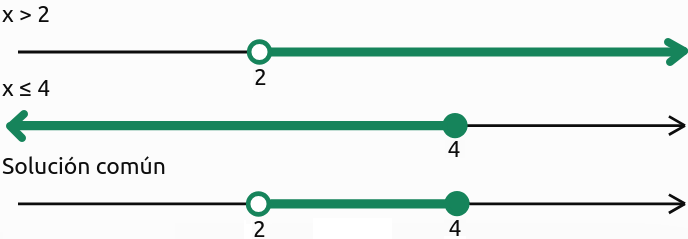
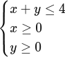
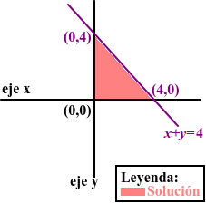

Sistemas de inecuaciones
¿Qué es un sistema de inecuaciones?
Un sistema de inecuaciones es un conjunto de dos o más inecuaciones que deben cumplirse al mismo tiempo.
Resolver un sistema consiste en encontrar los valores que son solución de todas las inecuaciones que lo forman.
Se representa colocando las inecuaciones entre una llave.
Por ejemplo:
\( \begin{cases} x>1\\ x\leq 5 \end{cases} \)
- La primera inecuación nos dice que \(x\) debe ser mayor que 1.
- La segunda nos dice que \(x\) debe ser menor o igual que 5.
Por tanto, las dos condiciones se cumplen simultáneamente cuando:
\(\boxed{1<x\leq 5} \)
En intervalos:
\( \boxed{S=(1,5]} \)
¿Cómo se resuelve un sistema?
Podemos seguir tres pasos:
- Resolver cada inecuación por separado.
- Representar las soluciones en la recta real.
- Buscar los valores que pertenecen a todas las soluciones a la vez. Esta operación se llama intersección.
- La intersección es la parte común de los conjuntos de soluciones.
Ejemplo 1. Sistema con dos inecuaciones de primer grado
Resuelve:
\( \begin{cases} 2x-4>0\\ x+1\leq 5 \end{cases} \)
Primera inecuación:
\( 2x>4 \)
\( x>2 \)
Segunda inecuación:
\( x\leq 4 \)
Buscamos los valores que cumplen las dos condiciones:
\( x>2\quad\text{y}\quad x\leq 4 \)
La solución es:
\( \boxed{x\in(2,4]} \)
Interpretación gráfica del ejemplo 1

La solución común contiene los números mayores que 2 y menores o iguales que 4.
Ejemplo 2. Sistema con solución vacía
Resuelve:
\( \begin{cases} x<2\\ x\geq 5 \end{cases} \)
- La primera inecuación exige que \(x\) sea menor que 2.
- La segunda exige que \(x\) sea mayor o igual que 5.
No existe ningún número que cumpla las dos condiciones simultáneamente.
Por tanto:
\( \boxed{S=\varnothing} \)
Este sistema no tiene solución.
Sistemas con inecuaciones de segundo grado
También podemos resolver sistemas en los que aparecen inecuaciones de segundo grado.
Ejemplo 3
Resuelve:
\( \begin{cases} x^2-4<0\\ x\geq 0 \end{cases} \)
Primera inecuación:
\( x^2-4<0 \)
Factorizamos:
\( (x-2)(x+2)<0 \)
La solución es:
\( -2<x<2 \)
Segunda inecuación:
\( x\geq 0 \)
Ahora buscamos la intersección:
- La primera condición permite los valores entre \(-2\) y \(2\).
- La segunda condición solo permite los valores mayores o iguales que 0.
La solución común es:
\( \boxed{x\in[0,2)} \)
Unión e intersección: dos conceptos diferentes
Es importante no confundir estas dos operaciones.
- Intersección: valores que cumplen ambas condiciones. En un sistema de inecuaciones se busca la intersección de las soluciones.
- Unión: valores que pertenecen a uno u otro conjunto, o a ambos.
Por ejemplo, si tenemos:
\( A=(-\infty,3],\qquad B=[1,5) \)
La intersección es:
\( A\cap B=[1,3] \)
La unión es:
\( A\cup B=(-\infty,5) \)
En un sistema, debemos utilizar la intersección porque todas las condiciones tienen que cumplirse al mismo tiempo.
|
|
|
Sistemas de inecuaciones con dos incógnitas
Un sistema de inecuaciones lineales es un conjunto de desigualdades en las que intervienen las mismas incógnitas.
Ejemplo:

Método de resolución:- Representar cada inecuación como una recta frontera (cambiando el signo ≤ o ≥ por =).
- Determinar en qué semiplano se cumple la desigualdad.
- La solución del sistema es la zona común a todas las inecuaciones.
En el ejemplo, el área solución es el triángulo formado por los puntos (0,0), (4,0) y (0,4).

Importancia:
Los sistemas de inecuaciones lineales tienen muchas aplicaciones en programación lineal, un área de las matemáticas muy usada en economía y ciencias sociales para optimizar recursos.
Inecuaciones para resolver problemas
¿Para qué sirven?
Las inecuaciones permiten resolver problemas en los que hay que cumplir una condición, respetar un límite o comparar cantidades.
Aparecen en situaciones como:
- Calcular cuánto podemos gastar con un presupuesto.
- Averiguar la edad mínima para realizar una actividad.
- Determinar cuántas personas pueden entrar en un espacio.
- Calcular el número de productos que se pueden comprar.
- Organizar la producción de una empresa.
- Estudiar las dimensiones de una figura geométrica.
La clave está en traducir el enunciado del problema al lenguaje matemático.
Pasos para resolver un problema con inecuaciones
- Leer y comprender el enunciado. Identificar qué se pregunta y qué condiciones hay que cumplir.
- Definir la incógnita. Indicar qué representa la letra \(x\).
- Plantear la inecuación. Traducir la información a una expresión matemática.
- Resolver la inecuación. Aplicar las reglas estudiadas.
- Interpretar la solución. Comprobar qué valores tienen sentido en el contexto del problema.
- Escribir la respuesta. Contestar con una frase que responda a la pregunta.
Ejemplo 1. Un problema de presupuesto
Lucía tiene 40 € y quiere comprar una mochila que cuesta 18 € y varios cuadernos de 2 € cada uno. ¿Cuántos cuadernos puede comprar como máximo?
Paso 1. Definimos la incógnita.
Sea \(x\) el número de cuadernos.
Paso 2. Planteamos la inecuación.
El gasto total no puede superar los 40 €:
\( 18+2x\leq 40 \)
Paso 3. Resolvemos.
\( 2x\leq 22 \)
\( x\leq 11 \)
Paso 4. Interpretamos.
El número de cuadernos no puede ser negativo ni tener decimales. Por tanto, Lucía puede comprar como máximo 11 cuadernos.
Respuesta: Lucía puede comprar hasta 11 cuadernos sin superar su presupuesto.
Ejemplo 2. Un problema de edades
Un padre tiene 42 años y su hija tiene 12 años. ¿Dentro de cuántos años tendrá el padre al menos el doble de la edad de su hija?
Paso 1. Definimos la incógnita.
Sea \(x\) el número de años que deben pasar.
Paso 2. Expresamos las edades futuras.
Edad del padre: \(42+x\).
Edad de la hija: \(12+x\).
Paso 3. Planteamos la inecuación.
Queremos que la edad del padre sea al menos el doble de la edad de su hija:
\( 42+x\geq 2(12+x) \)
Paso 4. Resolvemos.
\( 42+x\geq 24+2x \)
Restamos \(x\):
\( 42\geq 24+x \)
Restamos 24:
\( 18\geq x \)
Por tanto:
\( x\leq 18 \)
Como buscamos cuándo se cumple esa condición a partir de ahora, tomamos \(x\geq 0\). Así, la condición se cumple durante los próximos 18 años, incluido el momento actual.
Respuesta: El padre tiene al menos el doble de la edad de su hija desde ahora hasta dentro de 18 años, ambos momentos incluidos.
Ejemplo 3. Un problema que necesita un sistema de inecuaciones
Para organizar una actividad escolar, un grupo dispone de 120 € para comprar entradas de adulto a 8 € y entradas infantiles a 5 €. Quieren comprar 20 entradas en total y necesitan al menos 8 entradas infantiles. ¿Qué cantidades de entradas pueden comprar?
Paso 1. Definimos las incógnitas.
\(x\): número de entradas de adulto.
\(y\): número de entradas infantiles.
Paso 2. Traducimos las condiciones.
En total necesitan 20 entradas:
\( x+y=20 \)
El gasto no puede superar 120 €:
\( 8x+5y\leq 120 \)
Necesitan al menos 8 entradas infantiles:
\( y\geq 8 \)
Además, \(x\) e \(y\) deben ser números enteros no negativos.
Paso 3. Simplificamos.
Como \(x+y=20\), podemos escribir:
\( x=20-y \)
Sustituimos en la condición del presupuesto:
\( 8(20-y)+5y\leq 120 \)
\( 160-8y+5y\leq 120 \)
\( 160-3y\leq 120 \)
\( -3y\leq -40 \)
Dividimos entre \(-3\) y cambiamos el sentido:
\( y\geq \dfrac{40}{3} \)
Como \(y\) debe ser un número entero, necesitamos al menos 14 entradas infantiles.
La condición \(y\geq 8\) también se cumple si \(y\geq14\), por lo que la condición más restrictiva es la del presupuesto.
Como hay 20 entradas en total, las posibles cantidades son:
\( y\) =14, 15, 16, 17, 18, 19, 20
Y el número de entradas de adulto será \(x=20-y\).
Por ejemplo, una posibilidad es comprar 6 entradas de adulto y 14 infantiles, con un gasto de:
\( 6\cdot8+14\cdot5=118\) €
Respuesta: Pueden comprar entre 14 y 20 entradas infantiles, ambas cantidades incluidas, y completar las 20 entradas con las de adulto. En todos esos casos no superan el presupuesto de 120 €.
Errores frecuentes que debemos evitar
Al resolver inecuaciones y sistemas, hay algunos errores que conviene tener especialmente en cuenta.
| Error frecuente | Cómo evitarlo |
| No cambiar el signo al dividir por un número negativo. | Recordar que el signo de la desigualdad se invierte. |
| Confundir \(<\) con \(\leq\). | Comprobar si el extremo está incluido en la solución. |
| Incluir una raíz cuando la desigualdad es estricta. | Si aparece \(<\) o \(>\), las raíces que hacen cero la expresión no se incluyen. |
| Resolver un sistema sin buscar la parte común. | Representar las soluciones y calcular su intersección. |
| Aceptar soluciones negativas o decimales en problemas de cantidades enteras. | Comprobar si la incógnita representa personas, objetos u otra cantidad que deba ser entera y no negativa. |
| No responder a la pregunta del problema. | Terminar siempre con una frase que interprete el resultado. |